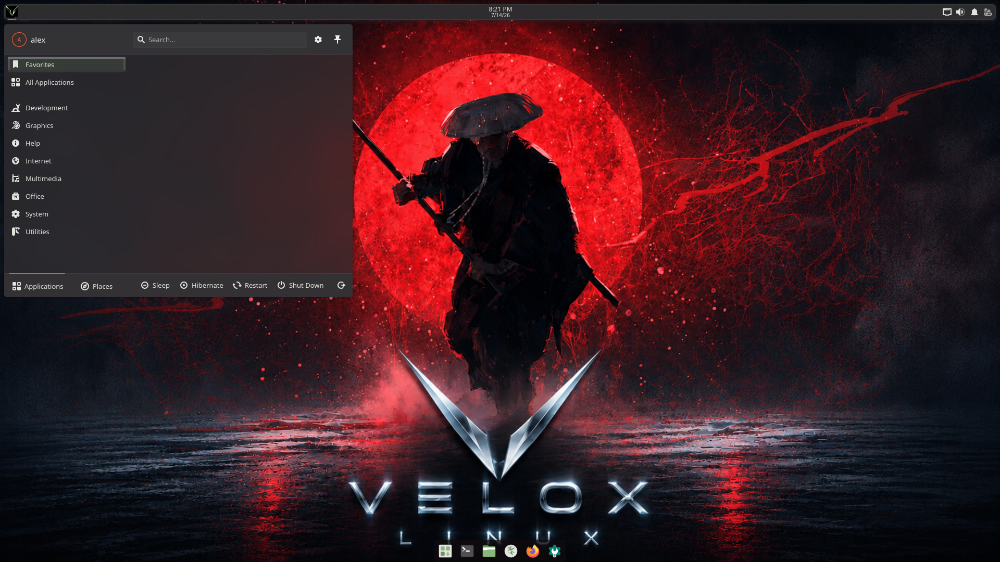
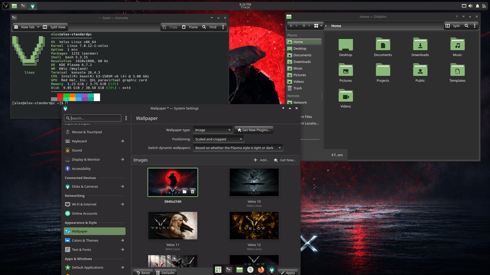

The flagship Velox desktop. Plasma 6 on Wayland — fully themed with Velox green accents, custom hover effects, and a polished bottom dock from day one.


Every visual element was tuned specifically for Velox — nothing is left at the KDE defaults.
ksmoothdock sits bottom-center on every boot. Forced into XWayland mode (QT_QPA_PLATFORM=xcb) so KWin honours EWMH dock hints and the position stays correct after display resolution is applied.
A custom Velox Kvantum theme built on KvDark. Glass hover effects on menus, list items, buttons, and toolbars — white highlight border on top with a Velox green accent.
The Leaf desktop theme ships with custom SVGs for every interactive widget. Hover states use a semi-transparent green fill with white glass borders — replacing the default blue Breeze highlight everywhere.
All Papirus blue tones (#5294e2, #4877b1, #1d344f) are replaced at install time with Velox green equivalents. Dolphin, Kate, and the KDE logo icon are individually patched too.
A custom KDE color scheme sets the system highlight to Velox green. accentColorFromWallpaper is locked off so the wallpaper can never override the accent color.
SDDM runs in Wayland mode with KWin as the compositor — this hands DRM master directly to the Plasma session at login with no flicker or permission errors. A custom Velox SDDM theme matches the desktop branding.
Technical reference for the colors and components used across the KDE desktop.
Applied across menus, list items, buttons, and taskbar via Kvantum SVG and the Leaf plasma theme. Each hover state uses: